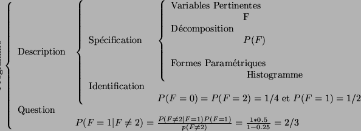

Si vous ne changez pas de porte car vous pensez que çà ne change rien, vous faites comme
beacoup gens, et
vous avez tort! En effet : Avec la stratégie de ne jamais changer de
porte, il est clair que vous avez juste une chance sur trois de vous
en sortir, puisque il y a une chance sur trois simplement que vous
désigniez la bonne porte au départ. Avec la stratégie de toujours
changer de porte : si le condamné avait dès le départ choisi la bonne
porte, il perd immanquablement. Ce cas se produit avec une
probabilité de
 , le geolier est
obligé de
montrer la 2ème porte avec l'échafaud. La 3è porte, qui est obligatoirement choisie
quand on change, est celle de la liberté. On a donc 2 chances sur 3
de s'en sortir si on change de porte, contre 1 sur 3 si on ne change
pas !
, le geolier est
obligé de
montrer la 2ème porte avec l'échafaud. La 3è porte, qui est obligatoirement choisie
quand on change, est celle de la liberté. On a donc 2 chances sur 3
de s'en sortir si on change de porte, contre 1 sur 3 si on ne change
pas !
Tout l'intérêt des probabilités conditionnelles est dans ce problème. Le gardien apporte une information, dont il faut tenir compte.